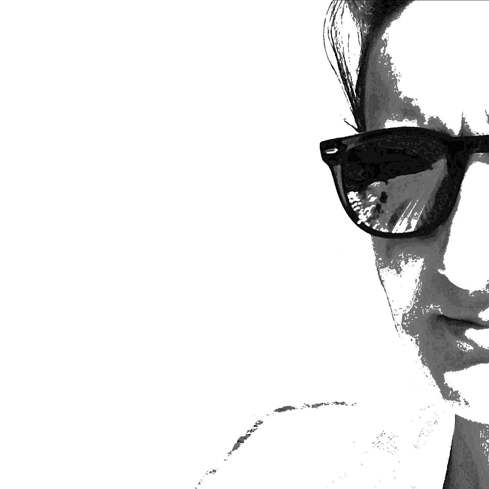

For me, the most difficult part of any task is the beginning. So it has been a bit of a challenge to get my head down and write this first blog post.
I am not someone who makes impulsive decisions, for that reason I consider myself a thinker. So before starting this blog I went to a seminar about academic blogging, watched podcasts on the topic, read blogs on blogging and my google history is full of blog related searches. Just to ensure that I had covered all my bases. I went on to make plan after plan and list after list of blog related ideas. None of this helped get me over the start line and publish a blog post.
What I lacked was a clear reason, or goal that I wanted to achieve from writing a blog. I don't want to admit it, but I just lacked motivation. In that moment I realised something about myself, I am the type of person who is 100% goal orientated. This is by no means a bad thing. Through this way of thinking I have had so many opportunities, from studying towards a PhD to playing water polo at an international level. However, the best part of these achievements has been the journey I've taken to get there and this is something I've been missing out on.
A blog represents a journey or a process, rather than an end goal. So I guess this is where I became unstuck. I needed to reevaluate the purpose of my blog. One tip that I picked up from my extensive google search into blogging was to be yourself and then your blog will be individual and different. So I'm going to be myself and set a goal that I want to achieve from writing this blog. I want to learn to appreciate the journey while I'm on it. As with all goals I need a strategy and my strategy is made up of three parts.
- Be inquisitive, question and be open minded.
- Write about my experiences, but never used as a place to rant. Remember the positive aspects of the journey.
- Always tell a story, but keep it to the point. Let's put a limit of 1000 words tops.
So there it is, my first blog post. We now know what to expect from future posts. Let's just hope that this twenty-something, who is now slightly closer to her thirties than teens has some interesting things to talk about.